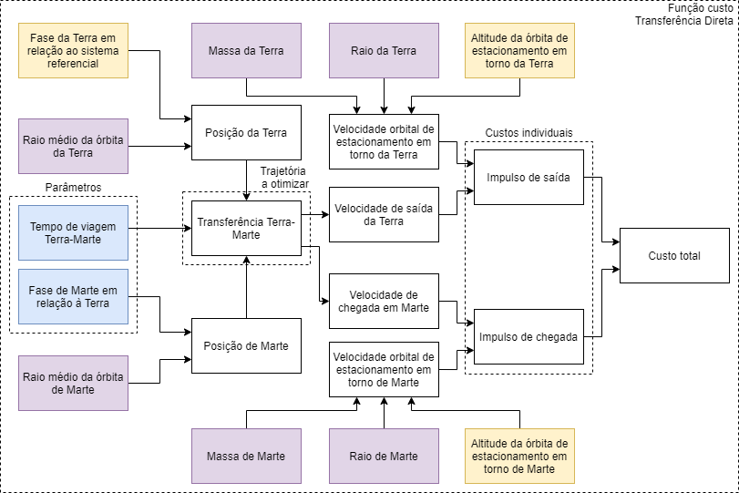
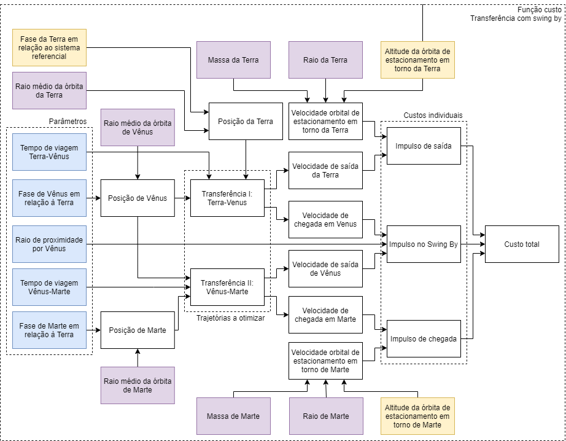
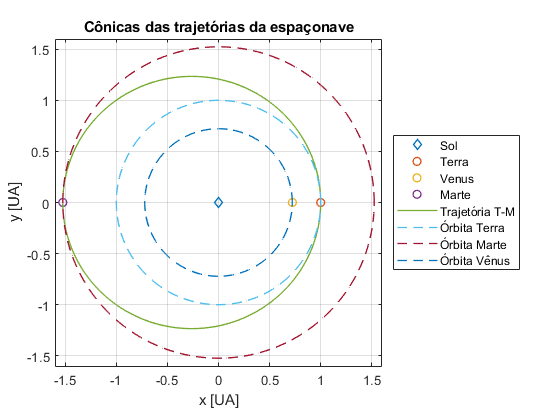
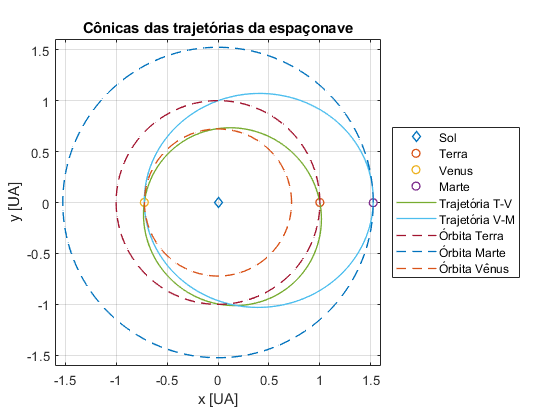
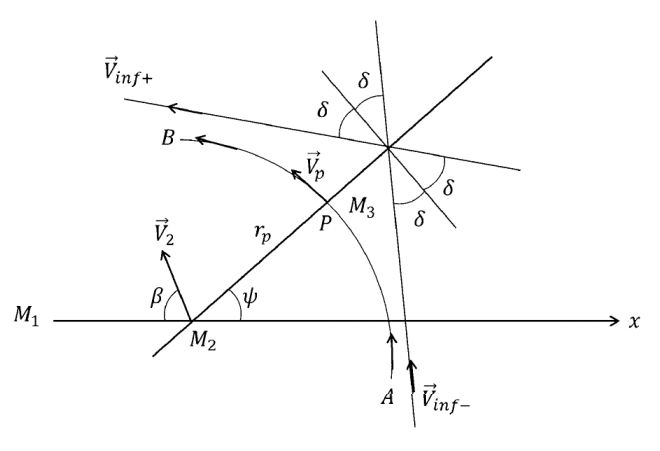

Galeria de missões
Escolha uma missão para explorar. Cada card abre o simulador com a configuração pré-carregada. Filtre por destino abaixo.
Simulador
Edite os parâmetros e veja o ΔV recalcular em tempo real. Os sliders dão controle fino; clique no valor pra digitar o número exato.
parâmetros tocar pra editar
Exploração: porkchop plot
Mapa de custo (ΔV) variando dois parâmetros enquanto os outros ficam fixos. Clique em qualquer ponto para aplicar a configuração no simulador e visualizar a trajetória.
⚙ ranges & resolução
Otimização ao vivo (PSO)
Lance o enxame e veja a convergência em tempo real. Roda em chunks assíncronos sem travar a UI. O modo atual (acima) é respeitado.
Teoria
O problema
O simulador resolve otimização de transferências interplanetárias impulsivas entre dois corpos do sistema solar. Cada missão da galeria é uma instância do mesmo problema com bodies, órbitas e estratégia diferentes.
Tipos de missão
Direta (single-leg)
- Saída de órbita ao redor da Terra (LEO ou GEO)
- Uma transferência heliocêntrica Lambert
- Captura em órbita ao redor do destino
Marte direto, Vênus direto, Mercúrio direto, Júpiter direto…

Com swing-by (multi-leg)
- Lambert até um corpo intermediário
- Sobrevoo (gravity assist) sem gasto de propelente
- Lambert do corpo intermediário até o destino
- Captura
Mercúrio via Vênus, Júpiter via Marte, Marte via Vênus…

Variantes por órbita de partida
Cada destino tem variantes LEO (h=200 km) e GEO (h=35786 km). Para v∞ baixo (Marte, Vênus, Lua) sair de GEO é mais barato; para v∞ alto (Mercúrio, Júpiter) o efeito Oberth faz LEO ganhar.
Caso especial: Lua (geocêntrico)
A missão Terra→Lua é a única que muda de paradigma: corpo central passa a ser a Terra, a Lua orbita ao redor dela, distâncias em milhares de km, tempos em dias.
Hipóteses
- Órbitas planetárias circulares e coplanares (problema 2D)
- Patched conics — dentro de cada SOI, só a gravidade local
- Manobras impulsivas (queima instantânea)
- Swing-by tratado como deflexão simples no plano
- Lambert apenas com m=0 (zero revoluções, automaticamente prógrado)
Problema de Lambert
Dado um par (r₁, r₂) e um tempo de voo, calcula a órbita Kepleriana que conecta os pontos. Algoritmo de Izzo (Newton-Raphson rápido) com fallback Lancaster-Blanchard+Gooding, do código de Rody Oldenhuis. O wrapper escolhe automaticamente o ramo prógrado.
Saída da órbita de partida
v∞ é a velocidade "no infinito" relativa ao corpo de partida:
vburn = √(|v∞|² + 2μpartida/Rórbita)
ΔVpartida = |vburn − vcirc|
Chegada e captura no destino
Mesmo princípio, agora no corpo de chegada:
vp = √(|v∞,arr|² + 2μdestino/Rórbita)
ΔVcaptura = |vp − vcirc,destino|
Swing-by (gravity assist)
Deflexão hiperbólica em torno do corpo, sem gasto de propelente:
A nave entra com v∞ relativo ao corpo do flyby, sofre a deflexão δ no plano, e sai com a mesma magnitude mas direção girada. No frame heliocêntrico, isso muda a energia da órbita.
Função-custo total
Soma de todos os ΔV impulsivos da missão:
Onde match-leg é o custo de casar a velocidade pós-flyby com a velocidade Lambert da próxima perna (zero se flyby for perfeitamente alinhado).
PSO — Particle Swarm Optimization
w = 0.9, φp = 0.6, φg = 0.8. Espaço de busca multimodal (vários mínimos locais), descontínuo nas bordas onde o Lambert falha — daí PSO em vez de gradiente. Para todas as missões, o PSO usa os bounds declarados no registro da missão.
Figuras de referência



Referências
- Relatório final: MVO_41_trabalho_final.pdf
- Apêndice: MVO_41_EXTRA.pdf
- Código MATLAB original: GitHub
- Lambert: Rody Oldenhuis (BSD), Izzo (ESA), Lancaster-Blanchard-Gooding
- Bibliografia: Curtis, Vallado, Battin